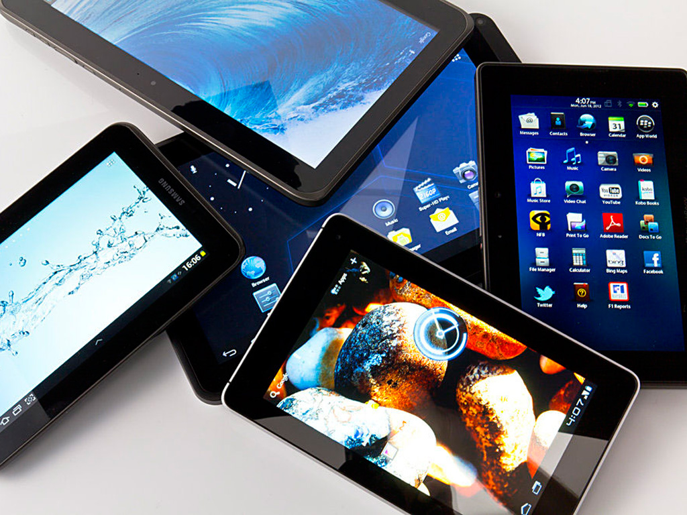
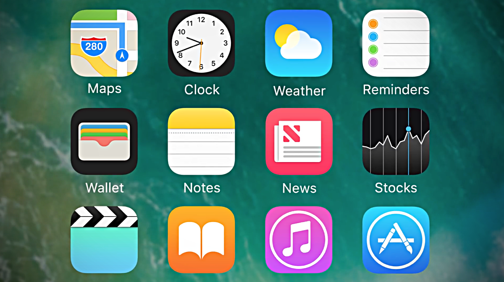

Tendencias
Tendencias:
Se señala que las tendencias se extenderán en los próximos cinco años y las tecnologías concurrirán en temas relacionados con la movilidad, lo social, la información y el modelo en la nube.

Gestión y diversidad de dispositivos móviles: Hacia 2018, se avisa sobre la creciente variedad de dispositivos, estilos de computación, contexto de usuario y paradigmas de interacción que harán que las estrategias de “todo en cualquier lugar” sean inalcanzables. Como consecuencia, los programas BYOD (bring your own device) están doblando o incluso triplicando el tamaño de la fuerza de trabajo móvil. Esto impactará plenamente en las IT y en las organizaciones financieras, que tendrán que revisar sus políticas de seguridad, debido al acceso a las aplicaciones corporativas desde aplicaciones personales.

Aplicaciones y apps móviles: Para 2014 el mejor rendimiento de JavaScript comenzará a impulsar HTML5 y el navegador como un entorno predominante de desarrollo de aplicaciones. Se recomienda que los desarrolladores se centren en crear modelos de interfaz de usuario expandidos que incluyan voz y vídeo más enriquecidos, y que puedan conectar a las personas de diferentes formas.
Las apps móviles continuarán creciendo, mientras que las aplicaciones tradicionales empezarán a caer. En este sentido, los desarrolladores
deberían buscar formas para fusionar apps con el fin de crear aplicaciones más amplias.
 Internet de las cosas: Internet se está expandiendo mucho más allá del PC y dispositivos móviles. La red llega a todo tipo de equipos como coches y televisores. El problema radica en que la mayor parte de las organizaciones y fabricantes de tecnología todavía tienen que explorar las posibilidades que esta tendencia trae consigo. Se debe pensar y analizar qué nuevos servicios e información se podrán proporcionar al consumidor a través de estos soportes.
Internet de las cosas: Internet se está expandiendo mucho más allá del PC y dispositivos móviles. La red llega a todo tipo de equipos como coches y televisores. El problema radica en que la mayor parte de las organizaciones y fabricantes de tecnología todavía tienen que explorar las posibilidades que esta tendencia trae consigo. Se debe pensar y analizar qué nuevos servicios e información se podrán proporcionar al consumidor a través de estos soportes.